<title>Every Canvas</title>
<link rel="stylesheet" href="https://fonts.googleapis.com/css2?family=IBM+Plex+Sans:ital,wght@0,400;0,500;0,600;1,400&family=IBM+Plex+Mono:wght@400;500&display=swap">
<style>
:root {
  --paper: #F6F5F0; --paper-2: #FFFFFF; --sunk: #EDEBE4; --ink: #1B1F24; --ink-2: #4A515B; --rule: #DAD6CB; --mark: #2F6BAA;
  --pass: #2E7D5B; --pass-bg: #E3F1EA; --warn: #B8741A; --warn-bg: #F7EBD6; --fail: #B3382E; --fail-bg: #F6E1DE; --todo: #8A8F97;
  --sans: "IBM Plex Sans", "Helvetica Neue", Arial, sans-serif; --mono: "IBM Plex Mono", "SF Mono", Menlo, monospace;
}
@media (prefers-color-scheme: dark) { :root:not([data-theme="light"]) { --paper: #17191D; --paper-2: #1E2126; --sunk: #23272D; --ink: #E8E6E1; --ink-2: #A9AEB6; --rule: #343941; --mark: #7FB0E8; --pass: #7FC9A6; --pass-bg: #1F3A2E; --warn: #E0B06A; --warn-bg: #3D3120; --fail: #EF9A8F; --fail-bg: #45251F; --todo: #7B8088; } }
:root[data-theme="dark"] { --paper: #17191D; --paper-2: #1E2126; --sunk: #23272D; --ink: #E8E6E1; --ink-2: #A9AEB6; --rule: #343941; --mark: #7FB0E8; --pass: #7FC9A6; --pass-bg: #1F3A2E; --warn: #E0B06A; --warn-bg: #3D3120; --fail: #EF9A8F; --fail-bg: #45251F; --todo: #7B8088; }
body { margin: 0; background: var(--paper); color: var(--ink); font: 16px/1.55 var(--sans); }
main { max-width: 76ch; margin: 0 auto; padding: 48px 24px 96px; }
h1 { font-size: 40px; line-height: 1.1; font-weight: 600; letter-spacing: -0.02em; margin: 0 0 8px; text-wrap: balance; }
h2 { font-size: 22px; font-weight: 600; letter-spacing: -0.01em; margin: 48px 0 12px; text-wrap: balance; }
h3 { font-size: 16px; font-weight: 600; margin: 28px 0 8px; }
p { margin: 0 0 14px; max-width: 68ch; }
code { font: 0.92em var(--mono); }
.eyebrow { font: 500 12px/1 var(--mono); letter-spacing: 0.08em; text-transform: uppercase; color: var(--ink-2); margin-bottom: 18px; }
.verdict { font-size: 20px; line-height: 1.4; margin: 16px 0 28px; max-width: 64ch; }
.verdict b { font-weight: 600; }
.stamp { display: inline-block; font: 500 13px var(--mono); background: var(--sunk); border: 1px solid var(--rule); padding: 2px 8px; border-radius: 3px; }
.figures { display: grid; grid-template-columns: repeat(auto-fit, minmax(150px, 1fr)); gap: 12px; margin: 24px 0 8px; }
.figure { background: var(--paper-2); border: 1px solid var(--rule); border-radius: 4px; padding: 14px 16px; }
.figure .n { font: 600 30px/1 var(--sans); letter-spacing: -0.02em; font-variant-numeric: tabular-nums; }
.figure .l { font-size: 13px; color: var(--ink-2); margin-top: 6px; }
.figure.pass .n { color: var(--pass); } .figure.fail .n { color: var(--fail); }
table { border-collapse: collapse; width: 100%; font-size: 14.5px; }
th, td { text-align: left; vertical-align: top; padding: 9px 12px 9px 0; border-bottom: 1px solid var(--rule); }
th { font-weight: 600; font-size: 12.5px; letter-spacing: 0.04em; text-transform: uppercase; color: var(--ink-2); }
td.state { white-space: nowrap; font-weight: 500; }
.scroll { overflow-x: auto; }
.pill { display: inline-block; font: 500 12px/1 var(--mono); padding: 4px 8px; border-radius: 3px; }
.pill.pass { color: var(--pass); background: var(--pass-bg); } .pill.warn { color: var(--warn); background: var(--warn-bg); } .pill.fail { color: var(--fail); background: var(--fail-bg); } .pill.todo { color: var(--todo); background: var(--sunk); }
.group h3 { display: flex; align-items: baseline; gap: 10px; margin-top: 22px; }
.count { font: 500 12px var(--mono); color: var(--ink-2); }
.chips { list-style: none; margin: 0; padding: 0; display: grid; grid-template-columns: repeat(auto-fill, minmax(230px, 1fr)); gap: 6px 14px; }
.chip { display: grid; grid-template-columns: 10px 1fr; column-gap: 8px; align-items: baseline; padding: 4px 0; font-size: 13.5px; }
.chip code { font-size: 13px; }
.chip .meta { grid-column: 2; font-size: 11.5px; color: var(--ink-2); }
.dot { width: 8px; height: 8px; border-radius: 50%; background: var(--todo); align-self: center; }
.chip.pass .dot { background: var(--pass); } .chip.fail .dot { background: var(--fail); } .chip.fake-pass .dot { background: var(--pass); opacity: 0.45; } .chip.fake-fail .dot { background: var(--fail); }
.legend { display: flex; flex-wrap: wrap; gap: 16px; font-size: 13px; color: var(--ink-2); margin: 8px 0 0; }
.legend span::before { content: ""; display: inline-block; width: 8px; height: 8px; border-radius: 50%; margin-right: 6px; background: var(--todo); }
.legend .p::before { background: var(--pass); } .legend .f::before { background: var(--fail); } .legend .k::before { background: var(--pass); opacity: 0.45; }
.shots { list-style: none; margin: 8px 0 0; padding: 0; display: grid; grid-template-columns: repeat(auto-fill, minmax(220px, 1fr)); gap: 14px; }
.shots img { width: 100%; border: 1px solid var(--rule); border-radius: 3px; display: block; }
.shots span { display: block; font-size: 12.5px; color: var(--ink-2); margin-top: 6px; }
.note { border-left: 3px solid var(--mark); padding: 2px 0 2px 14px; color: var(--ink-2); font-size: 14.5px; }
ul.plain { padding-left: 20px; } ul.plain li { margin-bottom: 6px; }
</style>
<main>
<div class="eyebrow">Prepkin for Canvas · cross-school proof · 2026-09-13 06:14</div>
<h1>Every Canvas</h1>
<p class="verdict"><b>Instructure's cloud is one Canvas build for every school.</b> 137 real schools were read without logging in and every one answers with the same stylesheet bundle, <span class="stamp">common-7faef57a1a</span>, the same one canvas.dartmouth.edu serves George. What differs between schools is the theme, and it is public — so every school's theme was put on real Canvas under the real extension. <b>all 135 with a theme pass on real Canvas</b>; all 135 pass on the fake's pages.</p>

<div class="figures">
  <div class="figure"><div class="n">137</div><div class="l">real schools read anonymously</div></div>
  <div class="figure"><div class="n">1</div><div class="l">distinct Canvas build among them</div></div>
  <div class="figure"><div class="n">122</div><div class="l">ship their own CSS or JavaScript</div></div>
  <div class="figure pass"><div class="n">135<span style="font-size:18px;color:var(--ink-2)">/135</span></div><div class="l">pass on real Canvas</div></div>
</div>

<h2>What "every type of Canvas" turned out to mean</h2>
<p>A school's Canvas can differ from Dartmouth's in nine ways. Each was either proven the same, tested, fixed, or put under watch.</p>
<div class="scroll"><table>
<thead><tr><th>Dimension</th><th>What we found</th><th>State</th></tr></thead>
<tbody>
<tr><td>The Canvas build itself</td><td>One build across all 137 cloud schools and Dartmouth, served from 13 AWS zones across the US, Canada, Europe and Australia. Instructure deploys to everyone at once, so a selector that holds on one holds on all until the next release. The self-hosted sandbox is the open-source build from a few months earlier and shares the cloud's brand-variables file byte for byte.</td><td class="state"><span class="pill pass">same everywhere</span></td></tr>
<tr><td>Page security policy</td><td>Every school's Canvas sends one policy, <code>frame-ancestors</code> only — no <code>style-src</code>, no <code>script-src</code> (136 of 137 checked). The stylesheet our content script appends and the buddy's shadow root cannot be blocked at any of them. A school that ever adds a stricter policy shows up in <code>theme.json</code>.</td><td class="state"><span class="pill pass">same everywhere</span></td></tr>
<tr><td>The school's theme (Theme Editor CSS + JS + brand colours)</td><td>122 of 137 ship custom files; the biggest is mcpsmd.instructure.com at 5.8 MB of DesignPLUS. Each theme was placed on the sandbox's real pages where Canvas places it; the run checks the skin classes, the buddy, every rule-carrying selector, the rendered ground in light and dark, and our error log.</td><td class="state"><span class="pill pass">all 135 with a theme pass on real Canvas</span></td></tr>
<tr><td>Feature flags that rewrite markup</td><td>Only one leaks into the page for signed-out visitors, <code>responsive_student_grades_page</code>, and it is on at every school read; on Dartmouth it keeps <code>#grades_summary</code>. The modules rewrite and the widget dashboard stay behind flags the sandbox can flip (L6, R2) and the skin steps aside on both.</td><td class="state"><span class="pill pass">covered</span></td></tr>
<tr><td>The student's own settings</td><td>Language (Spanish; Arabic flips Canvas to right-to-left), List View and Recent Activity dashboards, colour overlays hidden (George's own setting), a collapsed nav, a narrow window, High Contrast. Set through the student's session on real Canvas, no admin.</td><td class="state"><span class="pill pass">run, see below</span></td></tr>
<tr><td>Canvas's request budget</td><td>Every school rations a session with the same leaky bucket: 50 units held per request in flight, refused at 600, drains 10 a second (cloud: 700). Twelve reads at once already lose the twelfth, so a student in a dozen courses lost one on every first sync. Fixed: six reads at a time, and a refusal waits and asks again.</td><td class="state"><span class="pill pass">fixed · X9, X10</span></td></tr>
<tr><td>Instructure's next deploy</td><td>Every school's policy header names its <code>.beta.instructure.com</code> host, and beta runs the next release about three weeks early. Read anonymously: 137 betas, one build, 8eb672e26f, 136 of them already ahead of production; the global chrome the skin hangs off (rail, logo, layout, skip link) is intact on all of them. <code>harvest.js --beta</code> is the early warning; the dashboard and course pages on beta need a login, so that check is George's, on <code>dartmouth.beta.instructure.com</code>.</td><td class="state"><span class="pill pass">watched · beta</span></td></tr>
<tr><td>Courses the school has locked by date</td><td>Many schools close a course once its dates pass. Canvas still lists it as an active enrolment, as a stub — id, name, <code>access_restricted_by_date</code> — that answers 401 to everything else. It was kept, listed on the phone with no work, and cost two refused requests per sync. Now dropped at the door.</td><td class="state"><span class="pill pass">fixed</span></td></tr>
<tr><td>Which name the school uses</td><td><code>canvas.school.edu</code> and <code>school.instructure.com</code> are one Canvas (every school's policy lists both, plus <code>.beta.</code> and <code>.test.</code>). Its next-page links carry the request's own host (checked in source, and on Dartmouth), so a plain school never hits it; a proxy that rewrites hosts would. A next-page link is now moved onto the connected origin rather than dropped — cookies still never leave it.</td><td class="state"><span class="pill pass">fixed · C29</span></td></tr>
</tbody></table></div>

<h2>Dartmouth today, in George's own Chrome</h2>
<p>Read-only, on the live cloud build with the extension he has installed. Every selector that carries a rule matched wherever its content exists.</p>
<div class="scroll"><table>
<thead><tr><th>Page</th><th>Hooks found</th><th>Ours</th></tr></thead>
<tbody>
<tr><td>Dashboard</td><td>rail, logo, 2 cards, 2 heroes, 2 action rows, Coming Up, Recent Feedback, dashboard header, right side. No To Do list (nothing to do) and no sidebar logo (Dartmouth has none).</td><td>skin on (<code>pk-paper-sky · pk-theme-deepsea</code>), buddy, a "Nothing due" line on each card; the 2020 orientation course is on the cards but carries no work. Colour overlays are hidden in his settings; Canvas wrote no opacity on these plain-colour heroes and we changed none.</td></tr>
<tr><td>Modules</td><td>course nav, 8 module headers, 31 items. No due dates in a workshop course; the four low-use tabs are hidden by the teacher. Modules rewrite: off.</td><td>skin on, buddy</td></tr>
<tr><td>Grades</td><td><code>#grades_summary</code> present under <code>responsive_student_grades_page</code>; the React summary is not.</td><td>skin on, buddy</td></tr>
<tr><td>Assignment → classic quiz</td><td>5 <code>.user_content</code> blocks; not a take page.</td><td>skin on, buddy</td></tr>
<tr><td>API</td><td>next-page links name <code>canvas.dartmouth.edu</code> itself; the bucket reads 700 remaining. Dartmouth's own theme script disables personal access tokens — the extension never needs one.</td><td>—</td></tr>
</tbody></table></div>

<h2>The schools</h2>
<p>Read from each sign-in page (or not-found page) on 2026-09-12 and 13. Hover a name for what it ships. Two districts' pages show no theme files at all, so there was nothing to put on the page for them.</p>
<div class="legend"><span class="p">pass on real Canvas</span><span class="k">pass on the fake's pages, real run pending</span><span class="f">fail</span><span>not run</span></div>
<section class="group"><h3>US universities on their own domain <span class="count">37</span></h3><ul class="chips"><li class="chip pass" title="real Canvas: pass · CSS, JS"><span class="dot"></span><code>canvas.dartmouth.edu</code><span class="meta">CSS · JS</span></li><li class="chip pass" title="real Canvas: pass · CSS, JS"><span class="dot"></span><code>canvas.harvard.edu</code><span class="meta">CSS · JS</span></li><li class="chip pass" title="real Canvas: pass · CSS, JS"><span class="dot"></span><code>canvas.mit.edu</code><span class="meta">CSS · JS</span></li><li class="chip pass" title="real Canvas: pass · CSS 5669 KB, JS"><span class="dot"></span><code>bcourses.berkeley.edu</code><span class="meta">CSS 5669 KB · JS</span></li><li class="chip pass" title="real Canvas: pass · CSS 2 KB, JS"><span class="dot"></span><code>canvas.brown.edu</code><span class="meta">CSS 2 KB · JS</span></li><li class="chip pass" title="real Canvas: pass · CSS 3 KB, JS"><span class="dot"></span><code>canvas.cornell.edu</code><span class="meta">CSS 3 KB · JS</span></li><li class="chip pass" title="real Canvas: pass · CSS, JS"><span class="dot"></span><code>canvas.upenn.edu</code><span class="meta">CSS · JS</span></li><li class="chip pass" title="real Canvas: pass · CSS, JS"><span class="dot"></span><code>courseworks2.columbia.edu</code><span class="meta">CSS · JS</span></li><li class="chip pass" title="real Canvas: pass · CSS 5 KB, JS"><span class="dot"></span><code>canvas.stanford.edu</code><span class="meta">CSS 5 KB · JS</span></li><li class="chip pass" title="real Canvas: pass · CSS, JS"><span class="dot"></span><code>canvas.uchicago.edu</code><span class="meta">CSS · JS</span></li><li class="chip pass" title="real Canvas: pass · JS"><span class="dot"></span><code>canvas.northwestern.edu</code><span class="meta">JS</span></li><li class="chip pass" title="real Canvas: pass · CSS, JS"><span class="dot"></span><code>canvas.duke.edu</code><span class="meta">CSS · JS</span></li><li class="chip pass" title="real Canvas: pass · CSS 5497 KB, JS"><span class="dot"></span><code>canvas.wisc.edu</code><span class="meta">CSS 5497 KB · JS</span></li><li class="chip pass" title="real Canvas: pass · CSS 5648 KB, JS"><span class="dot"></span><code>canvas.umn.edu</code><span class="meta">CSS 5648 KB · JS</span></li><li class="chip pass" title="real Canvas: pass · CSS 2 KB, JS"><span class="dot"></span><code>canvas.uw.edu</code><span class="meta">CSS 2 KB · JS</span></li><li class="chip pass" title="real Canvas: pass · CSS 3 KB, JS"><span class="dot"></span><code>canvas.ucdavis.edu</code><span class="meta">CSS 3 KB · JS</span></li><li class="chip pass" title="real Canvas: pass · CSS 5671 KB, JS"><span class="dot"></span><code>canvas.ucsd.edu</code><span class="meta">CSS 5671 KB · JS</span></li><li class="chip pass" title="real Canvas: pass · CSS 5669 KB, JS"><span class="dot"></span><code>bruinlearn.ucla.edu</code><span class="meta">CSS 5669 KB · JS</span></li><li class="chip pass" title="real Canvas: pass · CSS 20 KB, JS"><span class="dot"></span><code>canvas.asu.edu</code><span class="meta">CSS 20 KB · JS</span></li><li class="chip pass" title="real Canvas: pass · CSS 5670 KB, JS"><span class="dot"></span><code>canvas.colorado.edu</code><span class="meta">CSS 5670 KB · JS</span></li><li class="chip pass" title="real Canvas: pass · CSS 2 KB, JS"><span class="dot"></span><code>canvas.uoregon.edu</code><span class="meta">CSS 2 KB · JS</span></li><li class="chip pass" title="real Canvas: pass · CSS, JS"><span class="dot"></span><code>canvas.oregonstate.edu</code><span class="meta">CSS · JS</span></li><li class="chip pass" title="real Canvas: pass · CSS 5674 KB, JS"><span class="dot"></span><code>canvas.vt.edu</code><span class="meta">CSS 5674 KB · JS</span></li><li class="chip pass" title="real Canvas: pass · CSS 5503 KB, JS"><span class="dot"></span><code>canvas.tamu.edu</code><span class="meta">CSS 5503 KB · JS</span></li><li class="chip pass" title="real Canvas: pass · CSS 5669 KB, JS"><span class="dot"></span><code>canvas.illinois.edu</code><span class="meta">CSS 5669 KB · JS</span></li><li class="chip pass" title="real Canvas: pass · CSS 5670 KB, JS"><span class="dot"></span><code>canvas.unl.edu</code><span class="meta">CSS 5670 KB · JS</span></li><li class="chip pass" title="real Canvas: pass · CSS, JS"><span class="dot"></span><code>canvas.ku.edu</code><span class="meta">CSS · JS</span></li><li class="chip pass" title="real Canvas: pass · CSS 5670 KB, JS"><span class="dot"></span><code>canvas.emory.edu</code><span class="meta">CSS 5670 KB · JS</span></li><li class="chip pass" title="real Canvas: pass · CSS 5670 KB, JS"><span class="dot"></span><code>canvas.tufts.edu</code><span class="meta">CSS 5670 KB · JS</span></li><li class="chip pass" title="real Canvas: pass · CSS, JS"><span class="dot"></span><code>canvas.rice.edu</code><span class="meta">CSS · JS</span></li><li class="chip pass" title="real Canvas: pass · CSS 5497 KB, JS"><span class="dot"></span><code>canvas.nd.edu</code><span class="meta">CSS 5497 KB · JS</span></li><li class="chip pass" title="real Canvas: pass · CSS 5497 KB, JS"><span class="dot"></span><code>canvas.its.virginia.edu</code><span class="meta">CSS 5497 KB · JS</span></li><li class="chip pass" title="real Canvas: pass · CSS 5734 KB, JS"><span class="dot"></span><code>canvas.fsu.edu</code><span class="meta">CSS 5734 KB · JS</span></li><li class="chip pass" title="real Canvas: pass · CSS, JS"><span class="dot"></span><code>webcourses.ucf.edu</code><span class="meta">CSS · JS</span></li><li class="chip pass" title="real Canvas: pass · CSS, JS"><span class="dot"></span><code>canvas.iastate.edu</code><span class="meta">CSS · JS</span></li><li class="chip pass" title="real Canvas: pass · CSS 5672 KB, JS"><span class="dot"></span><code>canvas.txstate.edu</code><span class="meta">CSS 5672 KB · JS</span></li><li class="chip pass" title="real Canvas: pass · CSS, JS"><span class="dot"></span><code>canvas.liberty.edu</code><span class="meta">CSS · JS</span></li></ul></section><section class="group"><h3>US schools on instructure.com <span class="count">15</span></h3><ul class="chips"><li class="chip pass" title="real Canvas: pass · CSS, JS"><span class="dot"></span><code>yale.instructure.com</code><span class="meta">CSS · JS</span></li><li class="chip pass" title="real Canvas: pass · CSS 7 KB, JS"><span class="dot"></span><code>princeton.instructure.com</code><span class="meta">CSS 7 KB · JS</span></li><li class="chip pass" title="real Canvas: pass · CSS 5 KB, JS"><span class="dot"></span><code>psu.instructure.com</code><span class="meta">CSS 5 KB · JS</span></li><li class="chip pass" title="real Canvas: pass · CSS 3605 KB, JS"><span class="dot"></span><code>umich.instructure.com</code><span class="meta">CSS 3605 KB · JS</span></li><li class="chip pass" title="real Canvas: pass · CSS, JS"><span class="dot"></span><code>utexas.instructure.com</code><span class="meta">CSS · JS</span></li><li class="chip pass" title="real Canvas: pass · CSS 5903 KB, JS"><span class="dot"></span><code>ufl.instructure.com</code><span class="meta">CSS 5903 KB · JS</span></li><li class="chip pass" title="real Canvas: pass · CSS 5670 KB, JS"><span class="dot"></span><code>gatech.instructure.com</code><span class="meta">CSS 5670 KB · JS</span></li><li class="chip pass" title="real Canvas: pass · CSS 253 KB, JS"><span class="dot"></span><code>osu.instructure.com</code><span class="meta">CSS 253 KB · JS</span></li><li class="chip pass" title="real Canvas: pass · CSS 5670 KB, JS"><span class="dot"></span><code>byu.instructure.com</code><span class="meta">CSS 5670 KB · JS</span></li><li class="chip pass" title="real Canvas: pass · CSS 3796 KB, JS"><span class="dot"></span><code>utah.instructure.com</code><span class="meta">CSS 3796 KB · JS</span></li><li class="chip pass" title="real Canvas: pass · CSS 5678 KB, JS"><span class="dot"></span><code>iu.instructure.com</code><span class="meta">CSS 5678 KB · JS</span></li><li class="chip pass" title="real Canvas: pass · JS"><span class="dot"></span><code>wustl.instructure.com</code><span class="meta">JS</span></li><li class="chip pass" title="real Canvas: pass · CSS 5497 KB, JS"><span class="dot"></span><code>uncch.instructure.com</code><span class="meta">CSS 5497 KB · JS</span></li><li class="chip pass" title="real Canvas: pass · CSS 5676 KB, JS"><span class="dot"></span><code>umd.instructure.com</code><span class="meta">CSS 5676 KB · JS</span></li><li class="chip pass" title="real Canvas: pass · CSS, JS"><span class="dot"></span><code>uiowa.instructure.com</code><span class="meta">CSS · JS</span></li></ul></section><section class="group"><h3>Community colleges and districts <span class="count">11</span></h3><ul class="chips"><li class="chip pass" title="real Canvas: pass · CSS"><span class="dot"></span><code>sbcc.instructure.com</code><span class="meta">CSS</span></li><li class="chip pass" title="real Canvas: pass · CSS 5670 KB, JS"><span class="dot"></span><code>mdc.instructure.com</code><span class="meta">CSS 5670 KB · JS</span></li><li class="chip pass" title="real Canvas: pass · CSS 2 KB, JS"><span class="dot"></span><code>ilearn.laccd.edu</code><span class="meta">CSS 2 KB · JS</span></li><li class="chip pass" title="real Canvas: pass · CSS 2 KB, JS"><span class="dot"></span><code>learn.maricopa.edu</code><span class="meta">CSS 2 KB · JS</span></li><li class="chip pass" title="real Canvas: pass · CSS 2 KB, JS"><span class="dot"></span><code>pcc.instructure.com</code><span class="meta">CSS 2 KB · JS</span></li><li class="chip pass" title="real Canvas: pass · CSS 6 KB, JS"><span class="dot"></span><code>sdccd.instructure.com</code><span class="meta">CSS 6 KB · JS</span></li><li class="chip pass" title="real Canvas: pass · CSS 5808 KB, JS"><span class="dot"></span><code>hcpss.instructure.com</code><span class="meta">CSS 5808 KB · JS</span></li><li class="chip pass" title="real Canvas: pass · CSS 5702 KB, JS"><span class="dot"></span><code>browardschools.instructure.com</code><span class="meta">CSS 5702 KB · JS</span></li><li class="chip pass" title="real Canvas: pass · colours only"><span class="dot"></span><code>sfusd.instructure.com</code><span class="meta">colours only</span></li><li class="chip pass" title="real Canvas: pass · CSS 570 KB, JS"><span class="dot"></span><code>dcps.instructure.com</code><span class="meta">CSS 570 KB · JS</span></li><li class="chip pass" title="real Canvas: pass · CSS 3558 KB, JS"><span class="dot"></span><code>ccsd.instructure.com</code><span class="meta">CSS 3558 KB · JS</span></li></ul></section><section class="group"><h3>Outside the US <span class="count">10</span></h3><ul class="chips"><li class="chip pass" title="real Canvas: pass · CSS 2 KB, JS"><span class="dot"></span><code>canvas.ubc.ca</code><span class="meta">CSS 2 KB · JS</span></li><li class="chip pass" title="real Canvas: pass · CSS, JS"><span class="dot"></span><code>q.utoronto.ca</code><span class="meta">CSS · JS</span></li><li class="chip pass" title="real Canvas: pass · CSS 29 KB, JS"><span class="dot"></span><code>canvas.sydney.edu.au</code><span class="meta">CSS 29 KB · JS</span></li><li class="chip pass" title="real Canvas: pass · CSS 89 KB, JS"><span class="dot"></span><code>canvas.lms.unimelb.edu.au</code><span class="meta">CSS 89 KB · JS</span></li><li class="chip pass" title="real Canvas: pass · CSS 168 KB, JS"><span class="dot"></span><code>canvas.auckland.ac.nz</code><span class="meta">CSS 168 KB · JS</span></li><li class="chip pass" title="real Canvas: pass · CSS 136 KB, JS"><span class="dot"></span><code>canvas.bham.ac.uk</code><span class="meta">CSS 136 KB · JS</span></li><li class="chip pass" title="real Canvas: pass · CSS 4 KB, JS"><span class="dot"></span><code>canvas.ox.ac.uk</code><span class="meta">CSS 4 KB · JS</span></li><li class="chip pass" title="real Canvas: pass · CSS 11 KB, JS"><span class="dot"></span><code>canvas.hull.ac.uk</code><span class="meta">CSS 11 KB · JS</span></li><li class="chip pass" title="real Canvas: pass · JS"><span class="dot"></span><code>canvas.liverpool.ac.uk</code><span class="meta">JS</span></li><li class="chip pass" title="real Canvas: pass · colours only"><span class="dot"></span><code>canvas.sussex.ac.uk</code><span class="meta">colours only</span></li></ul></section><section class="group"><h3>Instructure&#x27;s own <span class="count">1</span></h3><ul class="chips"><li class="chip pass" title="real Canvas: pass · CSS, JS"><span class="dot"></span><code>learn.canvas.net</code><span class="meta">CSS · JS</span></li></ul></section><section class="group"><h3>Second sweep, 2026-09-13: more districts, colleges and systems <span class="count">69</span></h3><ul class="chips"><li class="chip pass" title="real Canvas: pass · colours only"><span class="dot"></span><code>ccsdut.instructure.com</code><span class="meta">colours only</span></li><li class="chip pass" title="real Canvas: pass · JS"><span class="dot"></span><code>jeffco.instructure.com</code><span class="meta">JS</span></li><li class="chip pass" title="real Canvas: pass · colours only"><span class="dot"></span><code>dpsk12.instructure.com</code><span class="meta">colours only</span></li><li class="chip pass" title="real Canvas: pass · colours only"><span class="dot"></span><code>hillsboroughschools.instructure.com</code><span class="meta">colours only</span></li><li class="chip pass" title="real Canvas: pass · colours only"><span class="dot"></span><code>mnps.instructure.com</code><span class="meta">colours only</span></li><li class="chip pass" title="real Canvas: pass · colours only"><span class="dot"></span><code>lcps.instructure.com</code><span class="meta">colours only</span></li><li class="chip pass" title="real Canvas: pass · CSS 20 KB, JS"><span class="dot"></span><code>pwcs.instructure.com</code><span class="meta">CSS 20 KB · JS</span></li><li class="chip pass" title="real Canvas: pass · JS"><span class="dot"></span><code>aacps.instructure.com</code><span class="meta">JS</span></li><li class="chip pass" title="real Canvas: pass · CSS 5971 KB, JS"><span class="dot"></span><code>mcpsmd.instructure.com</code><span class="meta">CSS 5971 KB · JS</span></li><li class="chip pass" title="real Canvas: pass · colours only"><span class="dot"></span><code>houstonisd.instructure.com</code><span class="meta">colours only</span></li><li class="chip todo" title="not run · colours only"><span class="dot"></span><code>dallasisd.instructure.com</code><span class="meta">colours only</span></li><li class="chip pass" title="real Canvas: pass · CSS 5710 KB, JS"><span class="dot"></span><code>katyisd.instructure.com</code><span class="meta">CSS 5710 KB · JS</span></li><li class="chip todo" title="not run · colours only"><span class="dot"></span><code>cfisd.instructure.com</code><span class="meta">colours only</span></li><li class="chip pass" title="real Canvas: pass · colours only"><span class="dot"></span><code>lausd.instructure.com</code><span class="meta">colours only</span></li><li class="chip pass" title="real Canvas: pass · colours only"><span class="dot"></span><code>sandiegounified.instructure.com</code><span class="meta">colours only</span></li><li class="chip pass" title="real Canvas: pass · colours only"><span class="dot"></span><code>sfusd.instructure.com</code><span class="meta">colours only</span></li><li class="chip pass" title="real Canvas: pass · CSS 2 KB, JS"><span class="dot"></span><code>wcpss.instructure.com</code><span class="meta">CSS 2 KB · JS</span></li><li class="chip pass" title="real Canvas: pass · CSS 5678 KB, JS"><span class="dot"></span><code>cms.instructure.com</code><span class="meta">CSS 5678 KB · JS</span></li><li class="chip pass" title="real Canvas: pass · colours only"><span class="dot"></span><code>gwinnett.instructure.com</code><span class="meta">colours only</span></li><li class="chip pass" title="real Canvas: pass · colours only"><span class="dot"></span><code>aps.instructure.com</code><span class="meta">colours only</span></li><li class="chip pass" title="real Canvas: pass · CSS 5670 KB, JS"><span class="dot"></span><code>ncvps.instructure.com</code><span class="meta">CSS 5670 KB · JS</span></li><li class="chip pass" title="real Canvas: pass · JS"><span class="dot"></span><code>canvas.jmu.edu</code><span class="meta">JS</span></li><li class="chip pass" title="real Canvas: pass · CSS 4 KB, JS"><span class="dot"></span><code>canvas.gmu.edu</code><span class="meta">CSS 4 KB · JS</span></li><li class="chip pass" title="real Canvas: pass · CSS 5539 KB, JS"><span class="dot"></span><code>canvas.odu.edu</code><span class="meta">CSS 5539 KB · JS</span></li><li class="chip pass" title="real Canvas: pass · CSS 18 KB, JS"><span class="dot"></span><code>canvas.wpi.edu</code><span class="meta">CSS 18 KB · JS</span></li><li class="chip pass" title="real Canvas: pass · CSS 5669 KB, JS"><span class="dot"></span><code>canvas.pitt.edu</code><span class="meta">CSS 5669 KB · JS</span></li><li class="chip pass" title="real Canvas: pass · JS"><span class="dot"></span><code>canvas.cmu.edu</code><span class="meta">JS</span></li><li class="chip pass" title="real Canvas: pass · CSS 168 KB, JS"><span class="dot"></span><code>canvas.case.edu</code><span class="meta">CSS 168 KB · JS</span></li><li class="chip pass" title="real Canvas: pass · CSS 6 KB, JS"><span class="dot"></span><code>canvas.msstate.edu</code><span class="meta">CSS 6 KB · JS</span></li><li class="chip pass" title="real Canvas: pass · colours only"><span class="dot"></span><code>canvas.gsu.edu</code><span class="meta">colours only</span></li><li class="chip pass" title="real Canvas: pass · CSS 5734 KB, JS"><span class="dot"></span><code>canvas.fsu.edu</code><span class="meta">CSS 5734 KB · JS</span></li><li class="chip pass" title="real Canvas: pass · CSS 1 KB, JS"><span class="dot"></span><code>canvas.fau.edu</code><span class="meta">CSS 1 KB · JS</span></li><li class="chip pass" title="real Canvas: pass · CSS 5704 KB, JS"><span class="dot"></span><code>canvas.unf.edu</code><span class="meta">CSS 5704 KB · JS</span></li><li class="chip pass" title="real Canvas: pass · JS"><span class="dot"></span><code>canvas.ou.edu</code><span class="meta">JS</span></li><li class="chip pass" title="real Canvas: pass · CSS, JS"><span class="dot"></span><code>canvas.okstate.edu</code><span class="meta">CSS · JS</span></li><li class="chip pass" title="real Canvas: pass · CSS, JS"><span class="dot"></span><code>canvas.ku.edu</code><span class="meta">CSS · JS</span></li><li class="chip pass" title="real Canvas: pass · CSS, JS"><span class="dot"></span><code>canvas.slu.edu</code><span class="meta">CSS · JS</span></li><li class="chip pass" title="real Canvas: pass · CSS 9 KB, JS"><span class="dot"></span><code>canvas.wustl.edu</code><span class="meta">CSS 9 KB · JS</span></li><li class="chip pass" title="real Canvas: pass · CSS 5670 KB, JS"><span class="dot"></span><code>canvas.unl.edu</code><span class="meta">CSS 5670 KB · JS</span></li><li class="chip pass" title="real Canvas: pass · CSS 2 KB, JS"><span class="dot"></span><code>canvas.umt.edu</code><span class="meta">CSS 2 KB · JS</span></li><li class="chip pass" title="real Canvas: pass · CSS, JS"><span class="dot"></span><code>canvas.uidaho.edu</code><span class="meta">CSS · JS</span></li><li class="chip pass" title="real Canvas: pass · CSS 2 KB, JS"><span class="dot"></span><code>canvas.uw.edu</code><span class="meta">CSS 2 KB · JS</span></li><li class="chip pass" title="real Canvas: pass · JS"><span class="dot"></span><code>canvas.pdx.edu</code><span class="meta">JS</span></li><li class="chip pass" title="real Canvas: pass · CSS 2 KB, JS"><span class="dot"></span><code>canvas.uoregon.edu</code><span class="meta">CSS 2 KB · JS</span></li><li class="chip pass" title="real Canvas: pass · CSS 13 KB, JS"><span class="dot"></span><code>canvas.unr.edu</code><span class="meta">CSS 13 KB · JS</span></li><li class="chip pass" title="real Canvas: pass · CSS 3796 KB, JS"><span class="dot"></span><code>canvas.utah.edu</code><span class="meta">CSS 3796 KB · JS</span></li><li class="chip pass" title="real Canvas: pass · CSS 5670 KB, JS"><span class="dot"></span><code>canvas.byu.edu</code><span class="meta">CSS 5670 KB · JS</span></li><li class="chip pass" title="real Canvas: pass · CSS 5497 KB, JS"><span class="dot"></span><code>canvas.nau.edu</code><span class="meta">CSS 5497 KB · JS</span></li><li class="chip pass" title="real Canvas: pass · CSS, JS"><span class="dot"></span><code>canvas.unm.edu</code><span class="meta">CSS · JS</span></li><li class="chip pass" title="real Canvas: pass · CSS 5497 KB, JS"><span class="dot"></span><code>canvas.uccs.edu</code><span class="meta">CSS 5497 KB · JS</span></li><li class="chip pass" title="real Canvas: pass · CSS 5715 KB, JS"><span class="dot"></span><code>canvas.du.edu</code><span class="meta">CSS 5715 KB · JS</span></li><li class="chip pass" title="real Canvas: pass · JS"><span class="dot"></span><code>canvas.alaska.edu</code><span class="meta">JS</span></li><li class="chip pass" title="real Canvas: pass · CSS, JS"><span class="dot"></span><code>canvas.csun.edu</code><span class="meta">CSS · JS</span></li><li class="chip pass" title="real Canvas: pass · JS"><span class="dot"></span><code>canvas.sdsu.edu</code><span class="meta">JS</span></li><li class="chip pass" title="real Canvas: pass · CSS 5669 KB, JS"><span class="dot"></span><code>canvas.ucsc.edu</code><span class="meta">CSS 5669 KB · JS</span></li><li class="chip pass" title="real Canvas: pass · JS"><span class="dot"></span><code>canvas.ucmerced.edu</code><span class="meta">JS</span></li><li class="chip pass" title="real Canvas: pass · CSS 1 KB, JS"><span class="dot"></span><code>canvas.cpp.edu</code><span class="meta">CSS 1 KB · JS</span></li><li class="chip pass" title="real Canvas: pass · CSS 5497 KB, JS"><span class="dot"></span><code>canvas.calpoly.edu</code><span class="meta">CSS 5497 KB · JS</span></li><li class="chip pass" title="real Canvas: pass · CSS 1 KB, JS"><span class="dot"></span><code>canvas.pepperdine.edu</code><span class="meta">CSS 1 KB · JS</span></li><li class="chip pass" title="real Canvas: pass · CSS, JS"><span class="dot"></span><code>canvas.chapman.edu</code><span class="meta">CSS · JS</span></li><li class="chip pass" title="real Canvas: pass · CSS 2 KB, JS"><span class="dot"></span><code>canvas.pasadena.edu</code><span class="meta">CSS 2 KB · JS</span></li><li class="chip pass" title="real Canvas: pass · CSS 4 KB, JS"><span class="dot"></span><code>canvas.lanecc.edu</code><span class="meta">CSS 4 KB · JS</span></li><li class="chip pass" title="real Canvas: pass · CSS 3 KB, JS"><span class="dot"></span><code>canvas.tccd.edu</code><span class="meta">CSS 3 KB · JS</span></li><li class="chip pass" title="real Canvas: pass · CSS 57 KB, JS"><span class="dot"></span><code>canvas.fscj.edu</code><span class="meta">CSS 57 KB · JS</span></li><li class="chip pass" title="real Canvas: pass · JS"><span class="dot"></span><code>canvas.morainevalley.edu</code><span class="meta">JS</span></li><li class="chip pass" title="real Canvas: pass · CSS, JS"><span class="dot"></span><code>canvas.mccneb.edu</code><span class="meta">CSS · JS</span></li><li class="chip pass" title="real Canvas: pass · CSS, JS"><span class="dot"></span><code>canvas.jccc.edu</code><span class="meta">CSS · JS</span></li><li class="chip pass" title="real Canvas: pass · CSS 1 KB, JS"><span class="dot"></span><code>canvas.ualberta.ca</code><span class="meta">CSS 1 KB · JS</span></li><li class="chip pass" title="real Canvas: pass · CSS, JS"><span class="dot"></span><code>canvas.sfu.ca</code><span class="meta">CSS · JS</span></li></ul></section>


<p class="note">One school's script, Stanford's, polls the dashboard with synchronous API calls; a driven browser never navigates away from that page, and in the first full run it took every school after it down. The run now opens a fresh tab for every page, the way a student opens the next page. Stanford passes; their students were never stuck.</p>

<h2>The student's settings</h2>
<p>Eight rows, all set through the student's own session on real Canvas, all pass. One found a bug: in right-to-left Canvas the sidebar sits on the left edge, so the buddy's panel opened off the page and gave every page a sideways scroll. The panel now opens to his right when there is no room on his left, and the Arabic row asserts no sideways scroll.</p>
<ul class="shots"><li>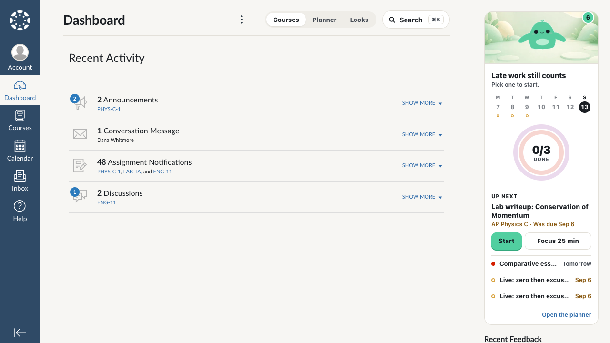<span>Recent Activity dashboard</span></li><li>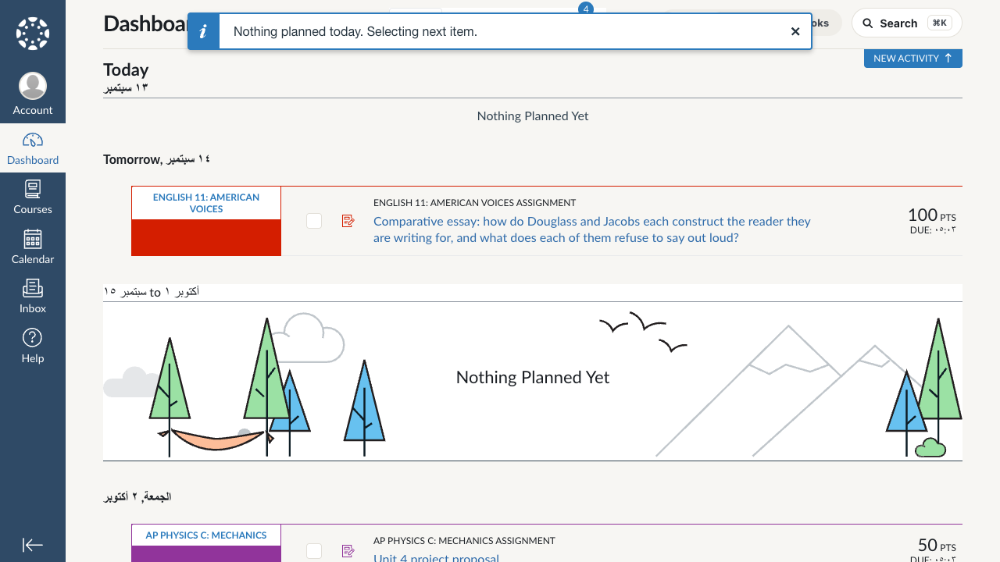<span>List View dashboard</span></li><li>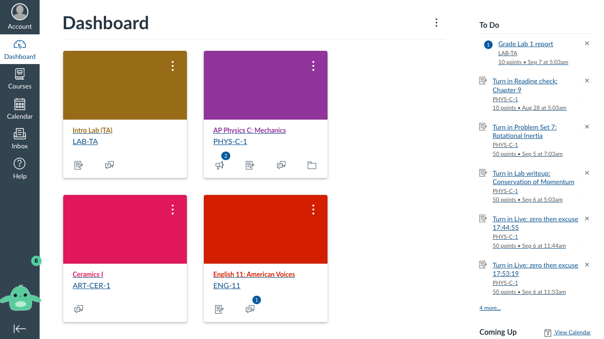<span>High Contrast on (skin off)</span></li><li>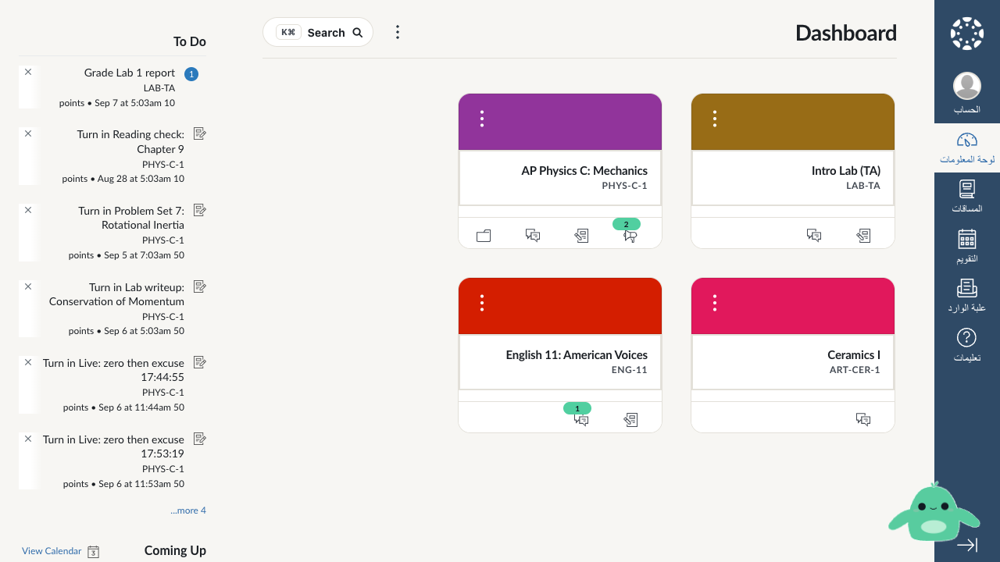<span>Arabic (right-to-left), dashboard</span></li><li>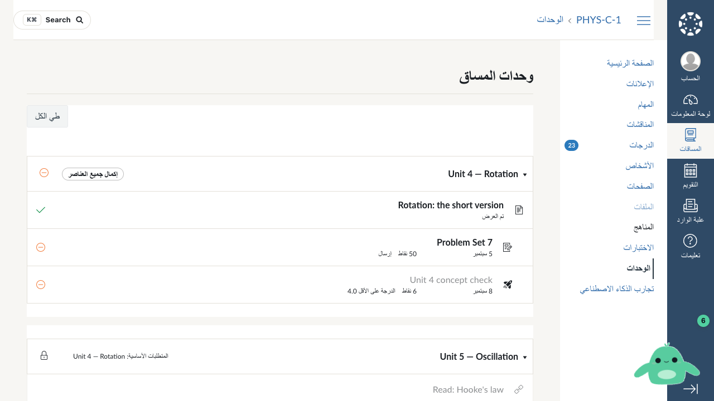<span>Arabic, modules</span></li><li>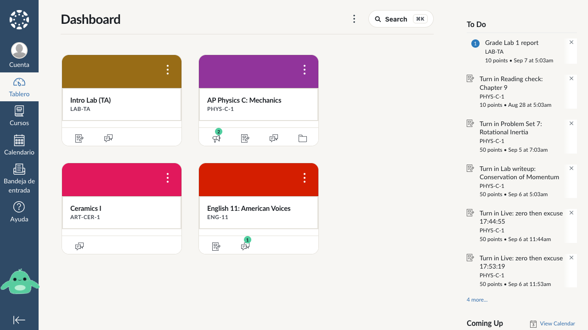<span>Spanish, dashboard</span></li><li>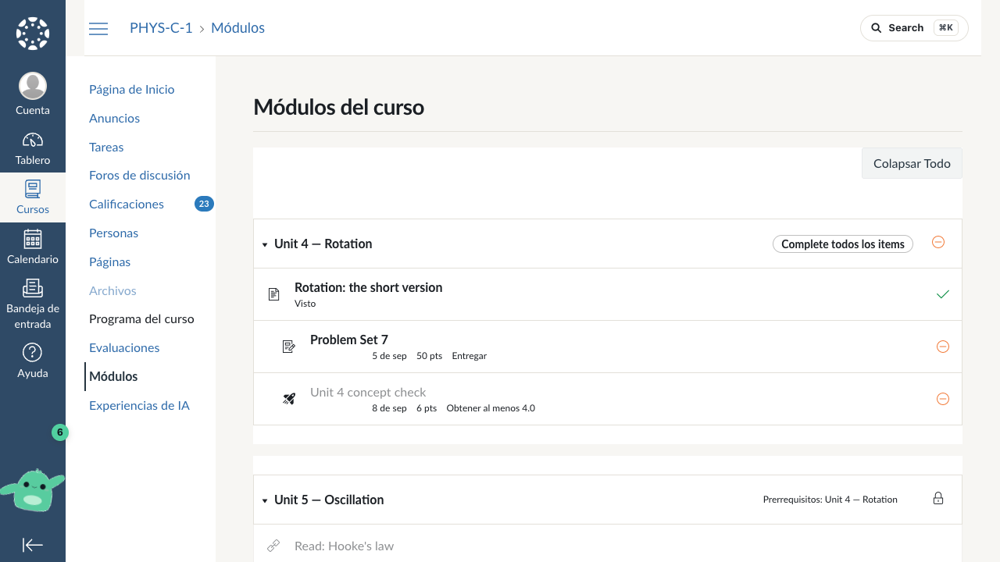<span>Spanish, modules</span></li><li>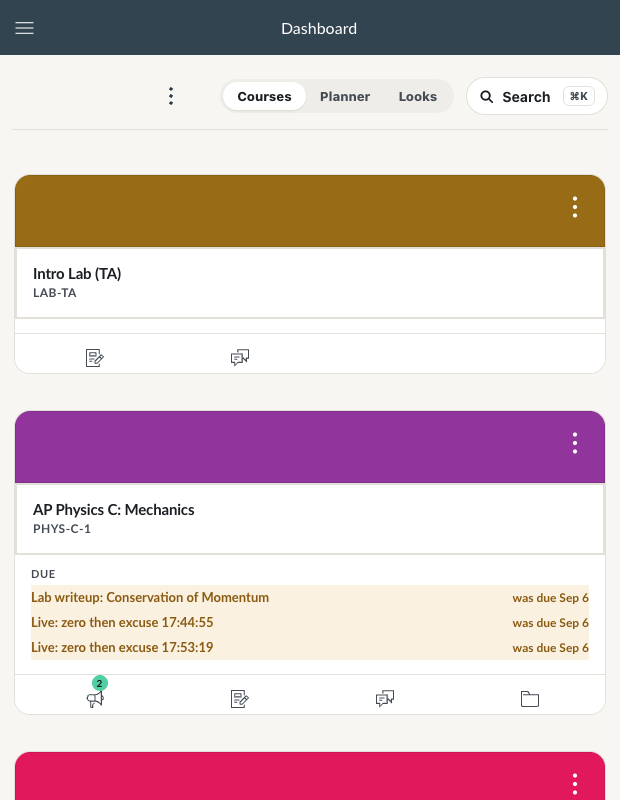<span>Narrow window, dashboard</span></li><li>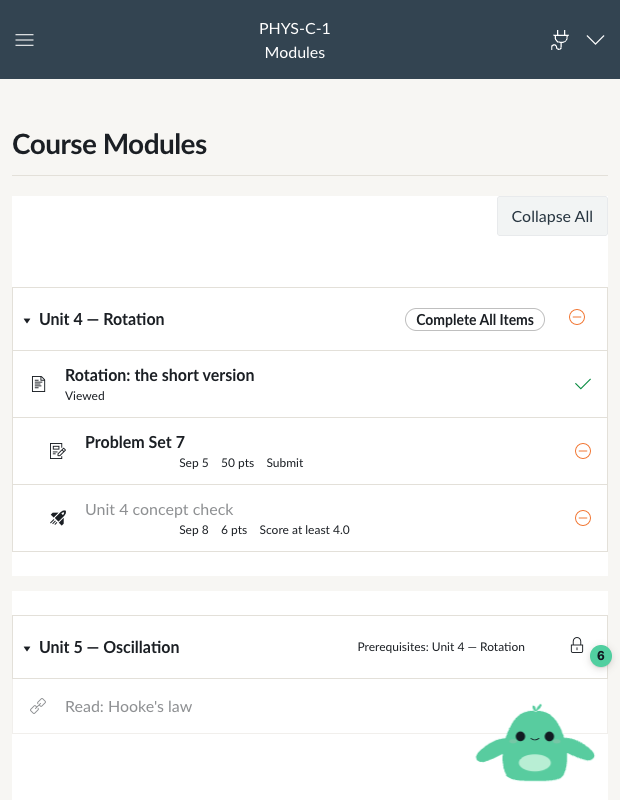<span>Narrow window, modules</span></li><li>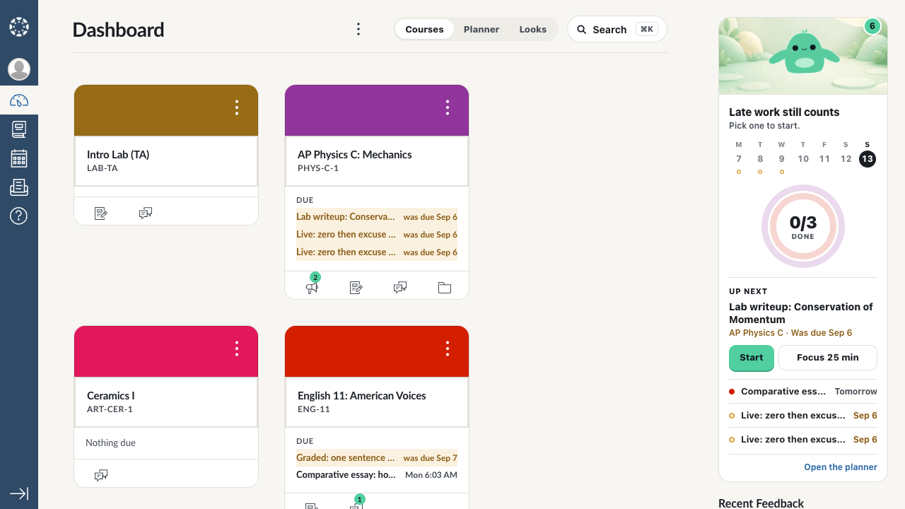<span>Global nav collapsed</span></li><li>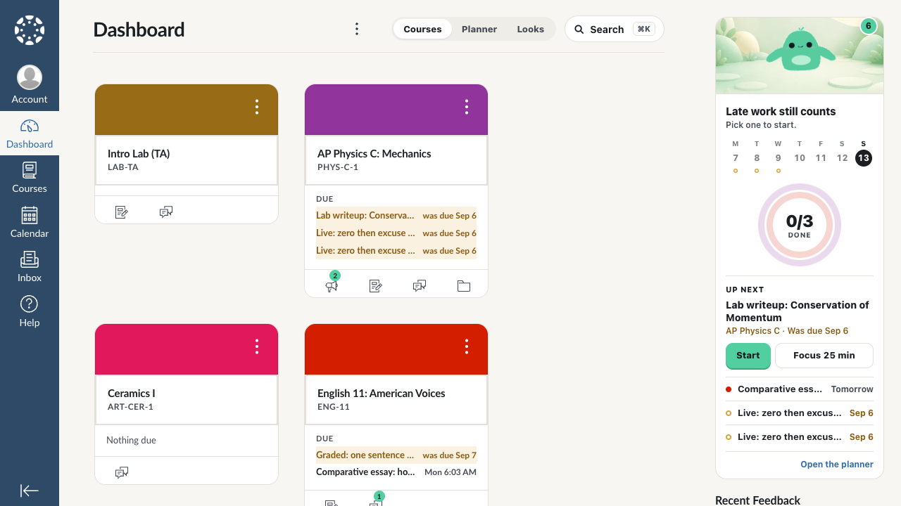<span>Colour overlays hidden</span></li></ul>

<h2>What this does not prove</h2>
<ul class="plain">
<li><b>A school that is not on Instructure's cloud.</b> Self-hosted Canvas is rare and the harvester would show it as a different build id; the sandbox is the closest stand-in.</li>
<li><b>A sub-account with its own theme.</b> The sign-in page shows the root account's theme; a department can layer its own on top of course pages.</li>
<li><b>A school's JavaScript that loads more JavaScript at run time.</b> One level of those files is kept with the harvest; the run refuses the rest of the network on purpose.</li>
<li><b>Instructure's next deploy, on the pages behind a login.</b> Beta shows the next build's global chrome to anyone; its dashboard, modules and grades need a Dartmouth login on <code>dartmouth.beta.instructure.com</code>. Three weeks' warning every release, if that check is run; the remote off-switch covers the day something moves anyway.</li>
</ul>

<h2>What changed in the code</h2>
<ul class="plain">
<li><code>extension/background.js</code>: reads go six at a time (<code>inTurns</code>); one Canvas GET (<code>canvasGet</code>) that recognises the bucket's refusal and retries after 3, 6, 9 seconds; <code>isCanvas</code> no longer calls a throttled answer "logged out".</li>
<li><code>extension/canvas.js</code>: <code>nextLink</code> moves a next-page link onto the connected origin when it is an API path, instead of refusing it; <code>mapCourses</code> drops a course Canvas has locked by date.</li>
<li><code>test/fake-canvas.js</code>: Canvas's bucket, word for word in its refusal; a school's theme dressed onto real or fake pages.</li>
<li><code>extension/content.js</code> + <code>panel.css</code>: the panel flips to the buddy's right when the band sits at the page's left edge (right-to-left Canvas).</li>
<li>New: <code>test/schools/harvest.js</code>, <code>test/schools.test.js</code>, <code>test/variants.test.js</code>; stress rows X9, X10; C29 rewritten.</li>
</ul>
<p class="note">One thing found on the way: <code>extension/canvas.test.js</code> "the detailed pass wins" had failed on main since 2026-09-09 — the test forgot to hand the sweep its clock, so its sample task aged out of the seven-day tail. One token (<code>NOW</code>) fixed it; <code>npm test</code> is 143 of 143 again, so <code>bridge/package.sh</code> will package.</p>
</main>
